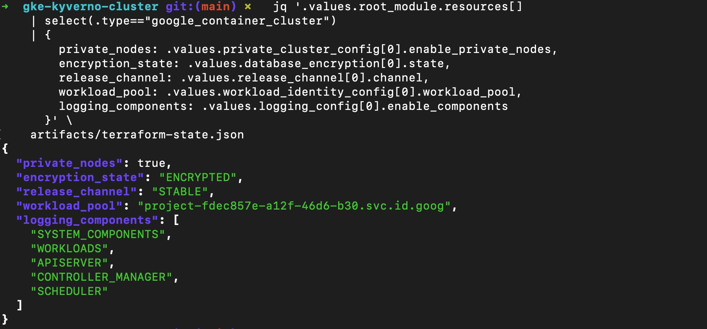

An ephemeral, FedRAMP-realistic GKE cluster with four NIST 800-53 controls hard-coded into the cluster definition. Private nodes, KMS-backed secrets encryption, Calico network policy, and full audit logging — all enforced at the infrastructure layer and evidenced in machine-readable artifacts.
Kubernetes clusters are one of the hardest environments to evidence for compliance. The attack surface is broad, the configuration options are numerous, and most of the security-relevant settings are buried in cluster flags that change between GKE versions. The typical approach is to deploy a cluster, then run a checklist against it after the fact.
This primitive takes the opposite position. The controls are baked into the Terraform definition before the cluster exists. SC-28, CM-6, AC-3, and AU-3 are not audit findings waiting to happen — they are resource attributes. The evidence is generated at plan time and captured in artifacts/plan.json and artifacts/terraform-state.json without any console interaction.
02 //
Architecture Decision
Every design choice was made to satisfy a specific compliance requirement, not just to follow GKE best practices. The cluster is intentionally minimal — two e2-small nodes, one zone, one lab session — so the compliance primitives are visible without being obscured by production complexity.
// private nodes
No Public Node IPs (AC-3)
Nodes have no external IP addresses. Egress goes through Cloud NAT. The control plane is locked to a single operator /32 via master authorized networks — no range, no CIDR block, one IP.
// kms encryption
Application-Layer Secrets (SC-28)
A dedicated Cloud KMS key encrypts Kubernetes secrets at the application layer, on top of GCP's default at-rest encryption. 90-day rotation enforced. The key ARN and state are captured in the evidence artifacts.
// shielded nodes
Verified Boot + Integrity (CM-6)
Secure boot and integrity monitoring are enabled. STABLE release channel enforces tested, predictable GKE versions. Default node pool removed. GKE_METADATA mode prevents workloads from accessing the underlying VM metadata endpoint.
// audit logging
Five Log Components + Audit Config (AU-3)
The cluster logging_config enables five components: SYSTEM_COMPONENTS, WORKLOADS, API_SERVER, SCHEDULER, CONTROLLER_MANAGER. A separate google_project_iam_audit_config captures ADMIN_READ, DATA_READ, and DATA_WRITE for container.googleapis.com.
// cluster architecture
03 //
Controls Enforced
Four NIST 800-53 controls are hard-coded into the cluster definition. Each one has a direct mapping to a field in the Terraform state — no interpretation required.
Each control maps to one or more concrete Terraform resource attributes. The enforcement is in the code, not a runbook.
SC-28 · secrets
Application-Layer Encryption
A dedicated KMS keyring and key are provisioned for the cluster. The database_encryption block in the GKE cluster resource references this key directly. GCP encrypts Kubernetes secrets at the application layer before writing them to etcd — on top of the default at-rest encryption. 90-day rotation is enforced at the key resource level.
Evidence: google_container_cluster.database_encryption[].state + key_name in plan.json
CM-6 · config
Hardened Cluster Configuration
STABLE release channel pins the cluster to tested, supported GKE versions. Shielded nodes enforce secure boot and integrity monitoring at the hypervisor level. The default node pool is removed and replaced with an explicit pool. GKE_METADATA mode blocks workloads from querying the underlying VM metadata endpoint. OAuth scopes are restricted to the minimum required.
Evidence: cluster + node_pool config blocks in terraform-state.json
AC-3 · access
Private Cluster with Locked Control Plane
Nodes have no public IP addresses. Egress routes through Cloud NAT. The control plane's master authorized networks is set to a single /32 CIDR — the operator's IP at session time. Workload identity is enabled so pods authenticate to GCP APIs as Kubernetes service accounts, not as the node's service account. Calico enforces network policy at the pod level.
Evidence: private_cluster_config, master_authorized_networks_config, workload_identity_config in plan.json
AU-3 · logging
Five-Component Audit Trail
The cluster logging_config enables SYSTEM_COMPONENTS, WORKLOADS, API_SERVER, SCHEDULER, and CONTROLLER_MANAGER. A separate google_project_iam_audit_config resource enables ADMIN_READ, DATA_READ, and DATA_WRITE for container.googleapis.com — capturing all control plane API calls at the project level, not just cluster-level events.
Evidence: logging_config.enable_components + google_project_iam_audit_config in terraform-state.json
04b //
What the Auditor Actually Sees
After apply, a single jq query against artifacts/terraform-state.json produces structured evidence for every enforced control. No console login. No screenshots of toggles. The state file is the audit artifact.

// jq query against artifacts/terraform-state.json — private_nodes: true, encryption_state: ENCRYPTED, release_channel: STABLE, five logging components confirmed
Field in Output
Value
NIST 800-53
NIST 800-171
FedRAMP
CMMC L2
SOC 2
private_nodes
true
AC-3
3.1.1 · 3.1.2
AC-3
AC.L2-3.1.1
CC6.1
encryption_state
"ENCRYPTED"
SC-28
3.13.16
SC-28
SC.L2-3.13.16
CC6.7
release_channel
"STABLE"
CM-6
3.4.2
CM-6
CM.L2-3.4.2
CC7.1
workload_pool
*.svc.id.goog
AC-3
3.1.1 · 3.1.2
AC-3
AC.L2-3.1.2
CC6.3
logging_components
[ 5 components ]
AU-3
3.3.1
AU-3
AU.L2-3.3.1
CC7.2
05 //
Session Flow
The cluster is designed for a single lab session and torn down immediately after. The Makefile wraps every step so the session flow is consistent and reproducible.
// full session flow
# Set your project and lock the control plane to your IP
The make plan and make apply targets automatically write to artifacts/plan.json and artifacts/terraform-state.json. Both files are gitignored — they are session artifacts, not committed state. An auditor receives these files directly as compliance evidence.
artifacts/# gitignored — generated evidence per session
plan.json# generated by make plan
terraform-state.json# generated by make apply
07 //
Cost and Scope
The cluster is intentionally minimal. GCP bills per second — a 45-minute lab session costs roughly $0.075. make destroy ends billing immediately.
Component
Rate
2x e2-small nodes
$0.054 / hr combined
Cloud NAT
$0.044 / hr + minor egress
Cloud KMS
<$0.01 / month — effectively zero per session
Zonal control plane
$0 — first zonal cluster per billing account is free
// phase 2
Phase 1 stops at the cluster. Phase 2 installs Kyverno and adds pod-level compliance policies on top of this infrastructure. The cluster this primitive provisions is the foundation for that work.